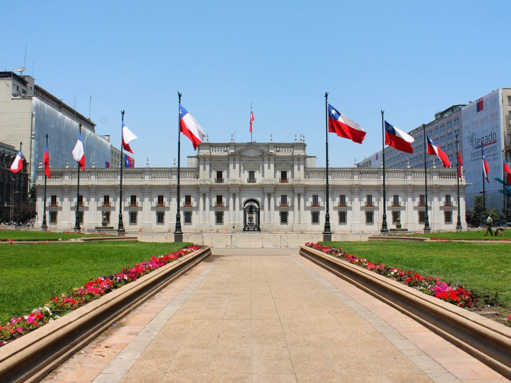
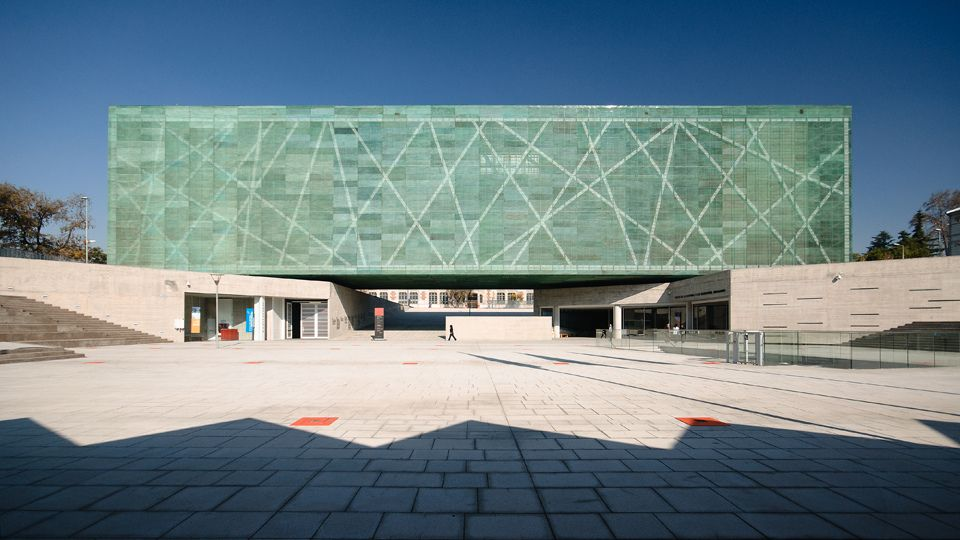
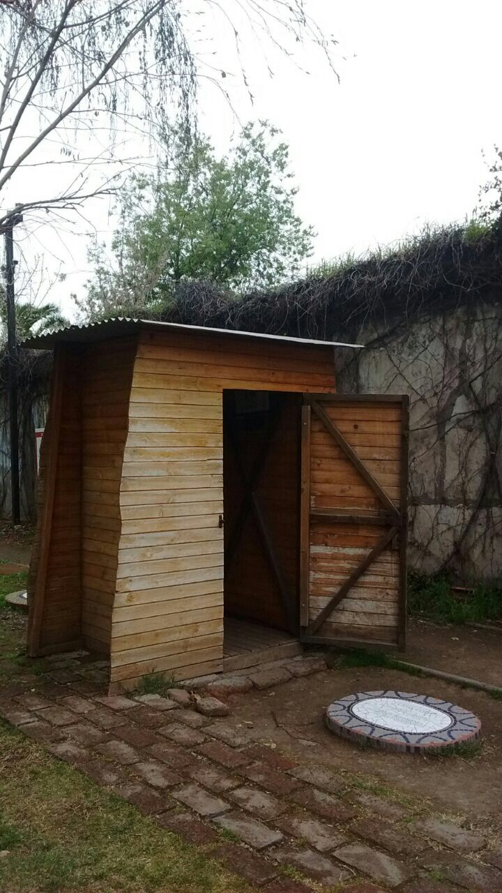
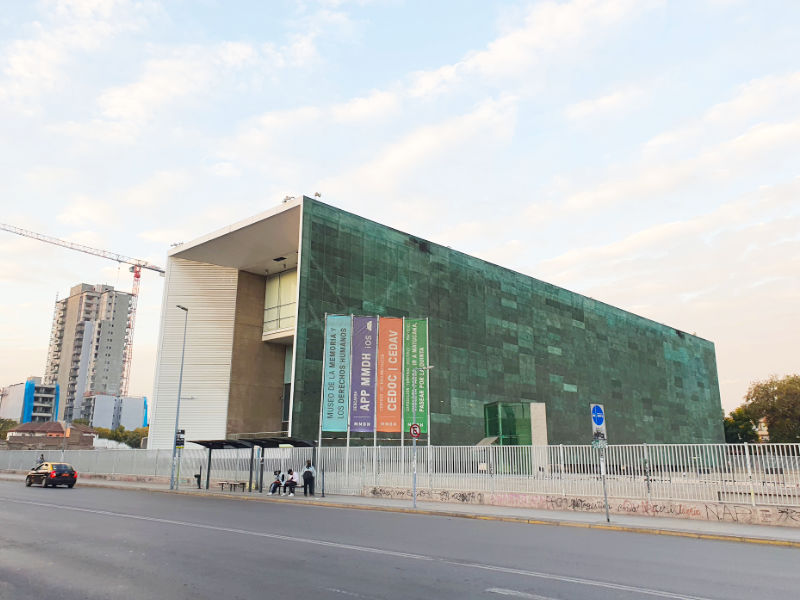
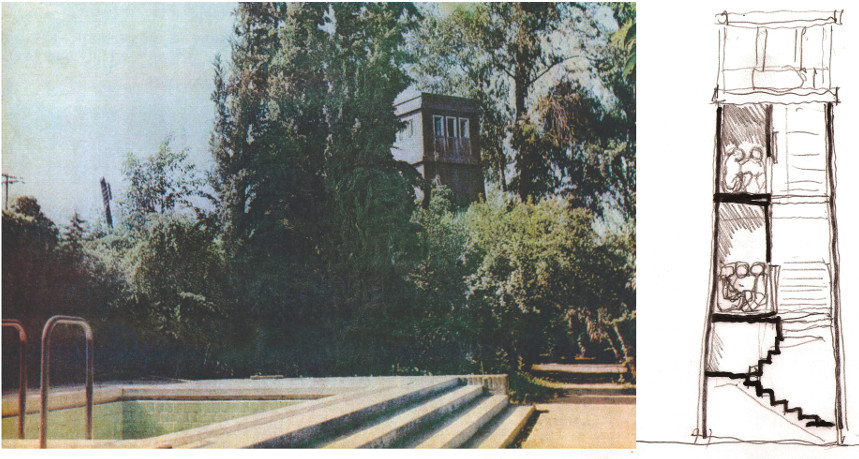
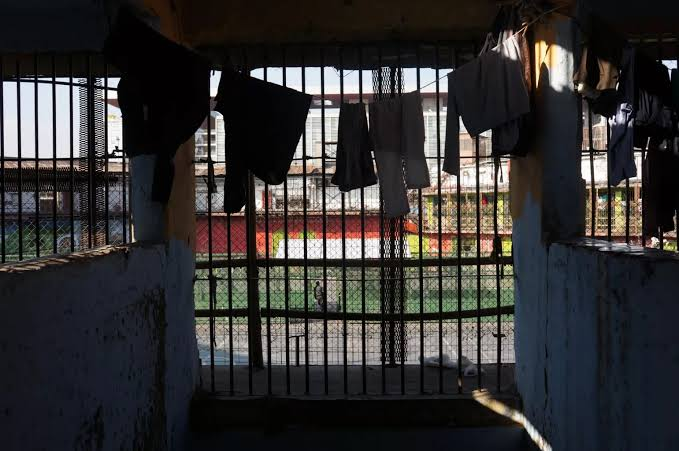
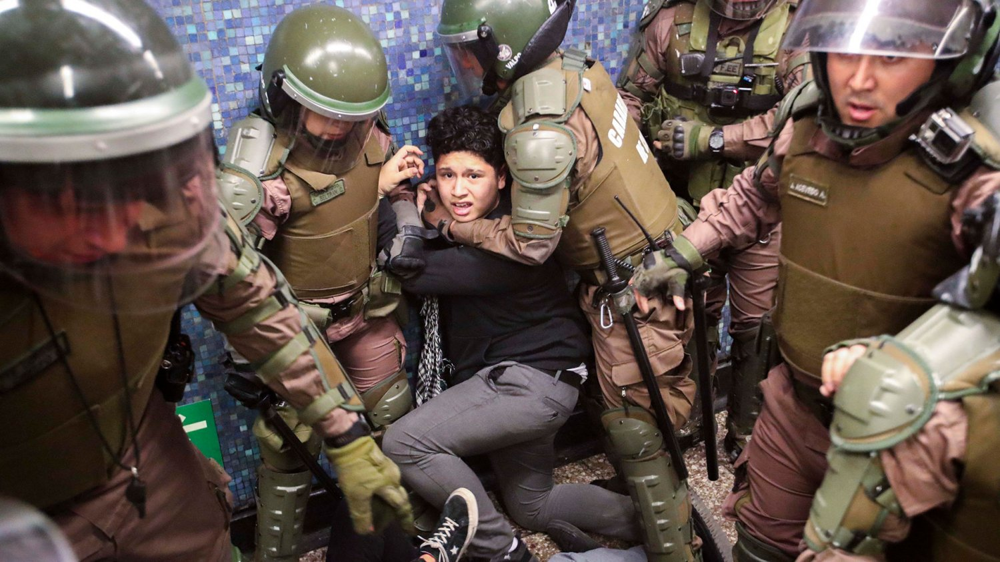
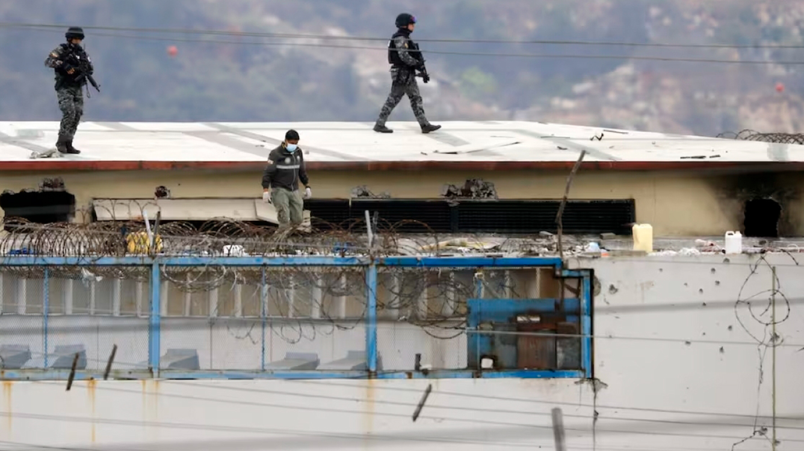
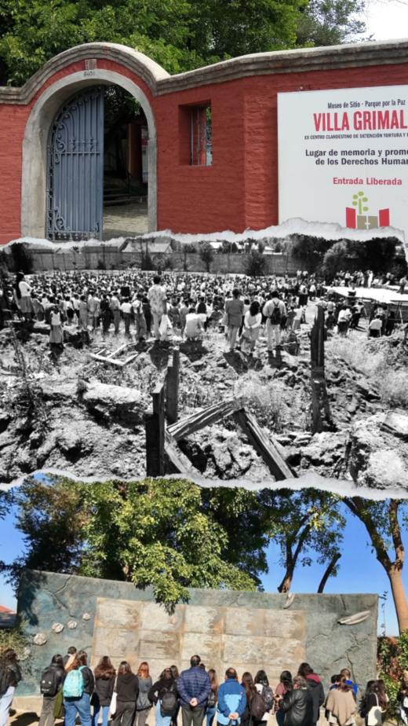

Usa las flechas, la rueda del mouse o desliza para pasar la página
Villa Grimaldi · Museo de la Memoria
El nuevo enemigo interno
Memoria, miedo y poder punitivo en Chile y Ecuador
Curso Trabajo de Campo y Actualidad · Magíster en Ciencias Sociales, mención Sociología de la Modernización · Universidad de Chile
Autores
Adriana Paccha Andrés Lazcano
Sitios de memoria Parque por la Paz · MMDH
Índice
Cuatro movimientos
El poder punitivo es la capacidad del Estado de perseguir, sancionar, privar de libertad y ejercer coerción sobre las personas — legítima solo cuando el derecho, el control institucional y las garantías de los DD.HH. la limitan. Este recorrido no sigue los capítulos de un ensayo: sigue una secuencia. Una palabra autoriza, el encierro la materializa, un cuerpo la carga, la memoria la advierte.
I
La palabra
«Guerra», dicha tres veces en medio siglo. De la Doctrina de Seguridad Nacional al miedo administrado.
Voces
II
El encierro
Un metro cuadrado en Villa Grimaldi y 58.310 personas privadas de libertad hoy: la misma operación, dos escalas.
Espacio
III
El cuerpo
Sobre quién recae la sospecha: edad, clase, color y territorio. De la frontera moral a Las Malvinas, Guayaquil.
Rostros
IV
La alerta
Por qué los sitios de memoria no hablan solo del pasado. 1973—2026 en una línea.
El muro
Entre movimiento y movimiento hay tres interludios sin numerar: una sola imagen, casi sin texto.
Índice02

I · La palabra
Una palabra que vuelve
Medio siglo separa estas tres declaraciones. Las tres nombran el orden interno con el mismo sustantivo, y ese sustantivo no describe: autoriza. Declarar la guerra hacia adentro convierte a una parte de la población en adversario, y al adversario no se le deben las mismas garantías.
«guerra»
Dictadura
Augusto Pinochet
Jefe de Estado, 1973–1990
20.10.2019
Sebastián Piñera
«Estamos en guerra contra un enemigo poderoso, implacable.»
2026
José Antonio Kast
Chile
Grabaciones de archivo. Pulsa cada círculo para escuchar.
El contexto institucional cambió por completo. El mecanismo, no: nombrar una amenaza para volver aceptable la expansión del poder punitivo del Estado.
Tres declaraciones · audio de archivo03

01
MMDH, arquitectura
02
Palacio de La Moneda
03
Villa Grimaldi, archivo
02
La Moneda, fachada
01
MMDH, arquitectura
02
Palacio de La Moneda
03
Villa Grimaldi, archivo
02
La Moneda, fachada
Audio · sesión del Senado
I · La palabra
De la Doctrina de Seguridad Nacional al miedo administrado
Bajo la Doctrina de Seguridad Nacional, la defensa del orden justificó la restricción de derechos y la ampliación de las facultades coercitivas del Estado (Zaffaroni, 2007). El «enemigo interno» ya no es solo político: hoy se le asocia con la delincuencia, el narcotráfico o la migración irregular (Navarrete Yáñez, 2019).
Nota— la Doctrina de Seguridad Nacional definió al «enemigo interno» como amenaza subversiva a neutralizar, aun a costa de los derechos fundamentales (Benavent Escuin, 1990).
«La migración ilegal debía ser constitutiva de delito», sostuvo el senador Rodrigo Galilea, apelando al uso de los medios de fuerza legítima del Estado.
Senado de la República de Chile, 18 de julio de 2024
Villa Grimaldi · retratos dispuestos en el pasto05

01
Casa CORVI, reconstrucción

02
MMDH, fachada
01
Casa CORVI, interior
02
MMDH, entrada
01
Casa CORVI, reconstrucción
02
MMDH, fachada
01
Casa CORVI, interior
02
MMDH, entrada
Ambiente · recorrido en sitio
II · El encierro
Un metro cuadrado
Declarada la guerra, alguien tiene que ocupar el lugar del enemigo. En Villa Grimaldi ese lugar tuvo medidas exactas: las Casas CORVI —un metro cuadrado para cuatro o cinco personas—, La Torre y las «conejeras», compartimientos sin luz ni ventilación a los que se entraba en cuclillas (Corp. Parque por la Paz Villa Grimaldi, 2017). No buscaban solo neutralizar al opositor: buscaban despojarlo de su condición de sujeto de derecho.
Casa CORVI: 1 m² para cuatro o cinco personas. Se turnaban para sentarse.
El encierro no fue una consecuencia del discurso: fue su forma construida.
05
MMDH, arquitectura
06
Muro de retratos
05
MMDH, fachada verde
06
Retratos, detalle
05
MMDH, arquitectura
06
Muro de retratos
05
MMDH, fachada verde
06
Retratos, detalle
Fuentes: Halbwachs, 2004 · Corp. Parque por la Paz Villa Grimaldi, 201706

Entonces · fotografía y plano de archivo
Ahora · 202607
Audio · entrevista, Contreras
La Torre


II · El encierro
Cuarenta y nueve coma seis
Medio siglo después, en democracia y sin cuarteles clandestinos, el encierro volvió a crecer. No es la misma violencia — pero es la misma respuesta: contener antes que atender. Población penitenciaria en Chile, 2021–2024.
38.977
2021
58.310
2024
+49,6%
en tres años · 290 / 100.000 hab. · 31 % sin condena
Nota — ese 31 % está en prisión preventiva: encierro antes de una sentencia condenatoria.
Wacquant (2010): la cárcel administra la marginalidad que la intervención social dejó de atender.
El discurso de la seguridad traza una frontera moral entre el «ciudadano de bien» y quienes deben demostrar que no son una amenaza (Luna Báez y Simelio, 2024): la sospecha se proyecta anticipadamente sobre ciertos territorios, antes de toda comprobación individual — como ya ensayaba, en otra escala, el encierro en un metro cuadrado.
Recibe protección
El ciudadano de bien
Debe demostrar que no lo es
El sujeto peligroso
La seguridad de unos puede construirse sobre la vigilancia y la exposición de otros a la violencia institucional.
Fuente: Luna Báez y Simelio, 2024 · Foto: prensa, s/d09
01
Fuerzas Armadas, Ecuador

02
Crisis carcelaria, 2024
01
FF.AA., despliegue
02
Recinto penitenciario
01
Fuerzas Armadas, Ecuador
02
Crisis carcelaria, 2024
01
FF.AA., despliegue
02
Recinto penitenciario
Audio · familiares, Las Malvinas
III · El cuerpo
Cuatro niños en Las Malvinas
“We are at war.”
Daniel Noboa · Presidente del Ecuador, 14.05.2026
La misma palabra, otra escala. Enero 2024: el Decreto N.º 111 reconoció un conflicto armado interno y desplegó a las Fuerzas Armadas contra organizaciones calificadas como terroristas. Cuando una lógica militar —identificar y neutralizar— se traslada al control cotidiano de un barrio, la frontera entre ciudadano y enemigo deja de ser evidente.
Diciembre 2024, Guayaquil: tres adolescentes y un niño afrodescendientes de un barrio popular fueron interceptados por una patrulla militar. Sus cuerpos aparecieron en Taura. En 2026 la Corte Constitucional determinó que la privación de libertad fue ilegal, arbitraria e ilegítima; la CIDH advirtió sobre perfilamiento racial. Edad, color, territorio: los tres criterios de la página anterior, en un solo caso.
Fotografías de prensa: AFP y otras fuentes no identificadas

Audio · voces superpuestas
Portón · excavación, archivo s/f · visita al memorial
La memoria en el presente11
1973 — DINA
2019 — Estallido
2024 — Cifras Chile
2026 — Ecuador
1973 — DINA
2019 — Estallido
2024 — Cifras Chile
2026 — Ecuador
IV · La alerta
La distancia solo se ve después
La diferencia entre el uso legítimo y el uso arbitrario de la fuerza estatal rara vez es evidente mientras ocurre. Suele reconocerse después, cuando ya se toleró la erosión. Por eso estos sitios no hablan solo del pasado: son el único lugar donde esa distancia quedó registrada.
1973
Golpe de Estado.
1974
Villa Grimaldi opera como cuartel de la DINA.
1990
Retorno a la democracia.
1991
Informe Rettig: se reconoce a las víctimas, pero no se determinan responsabilidades.
2010
Se inaugura el Museo de la Memoria y los Derechos Humanos.
2022
Estado de excepción en la Macrozona Sur, prorrogado de forma sostenida.
2023
Ley N.º 21.560 (Naín-Retamal): amplía las facultades policiales.
2025
Diecisiete militares llamados a juicio por desaparición forzada, Ecuador.
Ante cada medida que promete seguridad: qué límites acepta, sobre quién recae y qué garantías compromete.
Informe Rettig · BCN · Ley 21.560 · Fiscalía General del Estado12
Audio · montaje coral
Muro de retratos
MMDH, fachada
Villa Grimaldi
Casa CORVI
Muro de retratos
MMDH, fachada
Villa Grimaldi
Casa CORVI
Cierre
La memoria es un ejercicio de justicia hacia el pasado y, sobre todo, una herramienta de alerta para el presente.
Los límites del Estado no se defienden solos: su erosión suele comenzar antes de que sea posible nombrarla.
La palabra·El encierro·El cuerpo·La alerta
Una se dice, el segundo la construye, el tercero la paga, la última la reconoce.
Villa Grimaldi y el Museo de la Memoria y los Derechos Humanos, Santiago de Chile
Curso Trabajo de Campo y Actualidad · Magíster en Ciencias Sociales, mención Sociología de la Modernización · Universidad de Chile